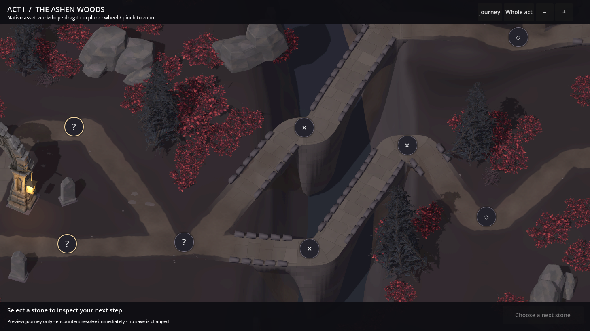
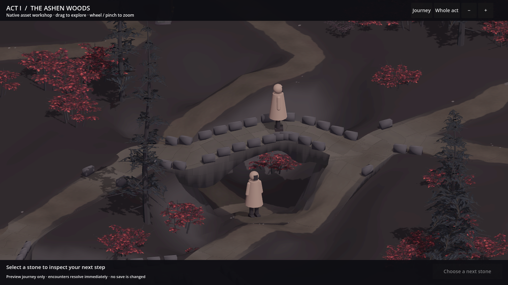
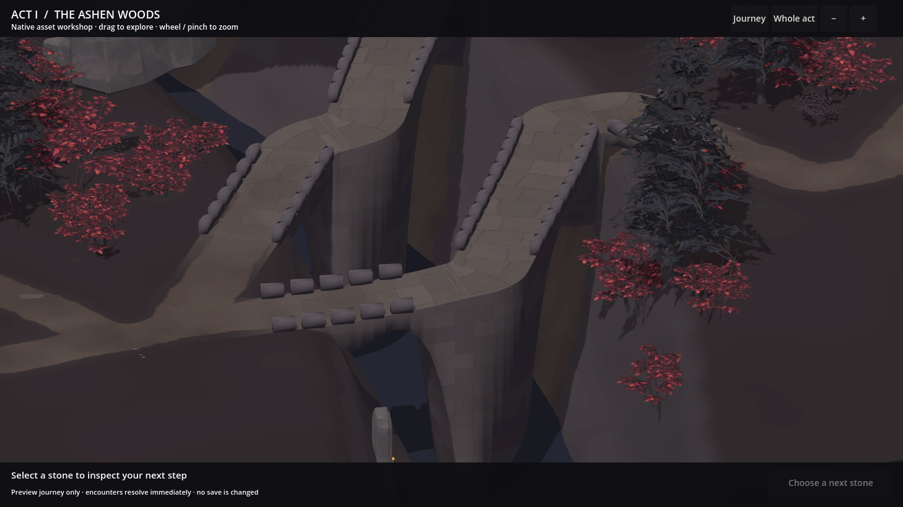
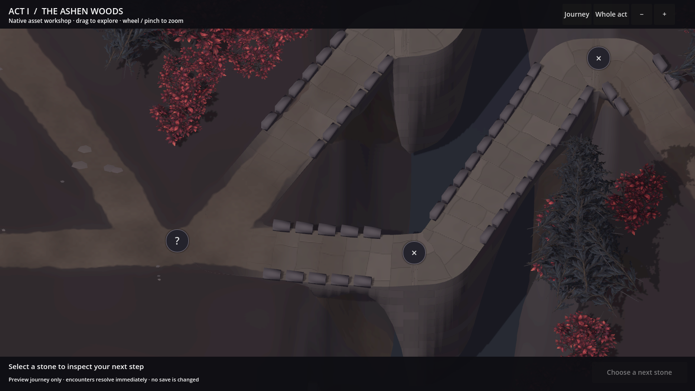
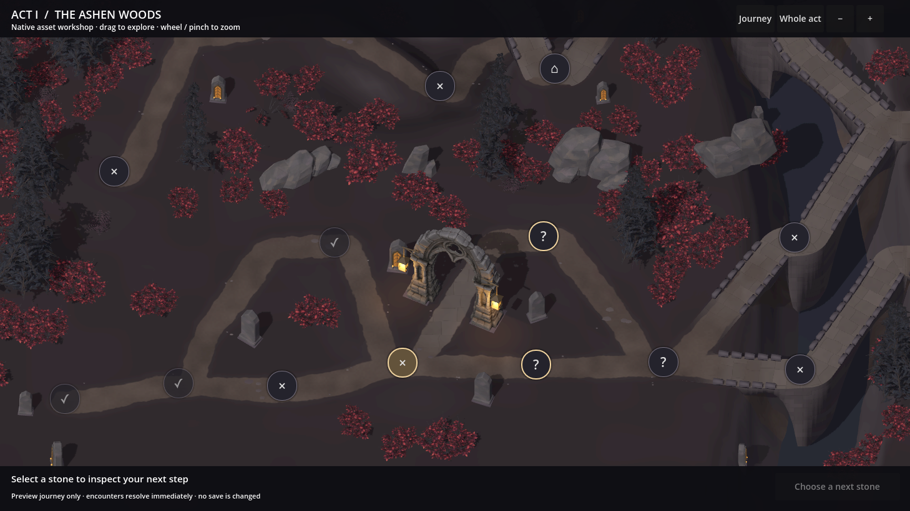
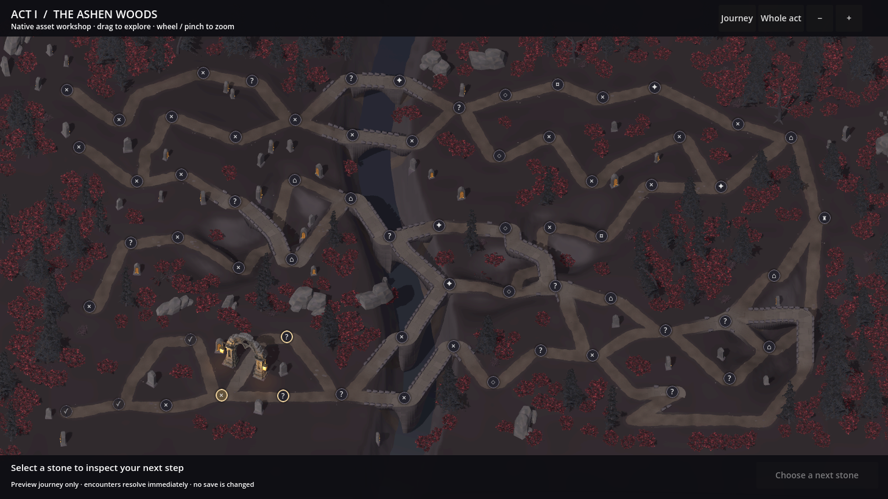

A journey with depth.
The river now sits below the wooded banks. Paths climb and descend with the land; stone bridges have visible arch openings and supported landings.
This revision rebuilds the spatial relationship between the roads, the terrain and the bridges. All twelve natural model types remain in the woodland.
The same places, with real changes in level.
Choose a location and switch between revisions. Each pair shows the same area; the framing follows the new ground height. Open any image at full resolution.
The river is incised below the banks. Look at the supported bridgeheads, deep piers and the visible space beneath the deck.
{kind=link}

Land with shape
Rolling woodland, a deeper river valley and dry passes create changes in level. Road approaches follow the terrain; the gateway has a quieter level clearing.
Bridges with space beneath
Arched masonry supports the deck above the lower route. Shared landings connect the bridge to each adjoining path.
One scale throughout
The existing woodland models are grounded on the new slopes. Adult reference figures make the height and width of the bridge easier to judge.
A bridge you can pass beneath.
The same native scene, viewed from a lower inspection angle. The figures are 1.75 m tall scale references, rather than final character art.


Where the bridge meets the road.
The bridgehead is part of the bank, with stonework continuing into the travelled earth. This is the closest interactive journey zoom.

The landscape around the journey.
The generator still supplies all 65 nodes and 76 connections. The terrain changes their physical presentation, while preserving the route graph.

View the complete generated act

Checks behind this revision
The native scene passes 19,704 road, shoulder and bridge contact probes. Three lower crossings have measured minimum clearances of 3.08 m, 2.36 m and 2.40 m. A 1.75 m body passes all 153 sampled positions beneath them without a masonry collision.
The review also checks land contacts, bridge coverage, road paint and camera framing. Phone, pad and desktop dimensions pass drag, wheel zoom, node selection and legal preview travel. These are native desktop renders at the reference dimensions, not physical-device performance qualification.
{kind=link}
{kind=link}
{kind=link}